Palabras clave: retardo de puertas, flip-flop D
Tipos de retardo de puertas
Los circuitos a nivel de puerta presentados en las dos secciones anteriores no tienen retardo; en realidad, los circuitos a nivel de puerta sí tienen retardo.
Verilog permite al usuario utilizar retardos de puerta para definir el retardo de propagación de la señal desde la entrada hasta su salida.
Principalmente, existen los siguientes 3 tipos de retardo de puerta.
Retardo de subida
Cuando cambia la entrada de una puerta, el tiempo de transición necesario para que su salida cambie de 0, x, z a 1 se denomina retardo de subida.
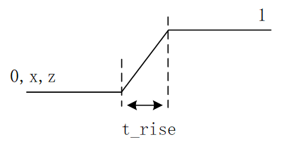
Retardo de bajada
Cuando cambia la entrada de una puerta, el tiempo de transición necesario para que su salida cambie de 1, x, z a 0 se denomina retardo de bajada.
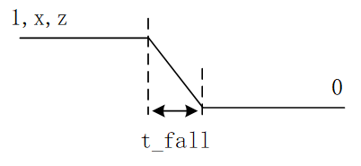
Retardo de apagado
El retardo de apagado se refiere al tiempo de transición necesario para que la salida de la puerta cambie de 0, 1, x al estado de alta impedancia z.
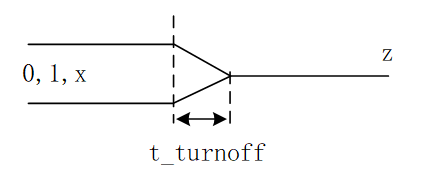
El tiempo de transición necesario para que la salida de la puerta cambie de 0, 1, z a x no está definido explícitamente, pero el tiempo requerido puede determinarse a partir de los otros tipos de retardo; es decir, es el menor de los 3 valores de retardo anteriores.
El retardo de puerta puede definirse al instanciar la celda de puerta; el formato de definición es el siguiente:
gate_type [delay] [instance_name] (signal_list) ;
Entre ellos, el número de retardos puede ser 0, 1, 2 o 3.
La siguiente tabla explica los valores de los distintos tipos de retardo según el número de retardos.
| Tipo de retardo | Sin retardo | 1 retardo (d) | 2 retardos (d1, d2) | 3 retardos (d1, d2, d3) |
|---|---|---|---|---|
| Subida | 0 | d | d1 | d1 |
| Bajada | 0 | d | d2 | d2 |
| Apagado | 0 | d | min(d1, d2) | d3 |
| to_x | 0 | d | min(d1, d2) | min(d1, d2, d3) |
Si el usuario no especifica un valor de retardo, el retardo por defecto es 0.
Si el usuario especifica 1 valor de retardo, todos los tipos de retardo toman este valor.
Si el usuario especifica 2 valores de retardo, estos representan respectivamente el retardo de subida y el de bajada; el retardo de apagado y el retardo 'to_x' son ambos el menor de estos 2 valores de retardo.
Si el usuario especifica 3 valores de retardo, estos representan respectivamente el retardo de subida, el de bajada y el de apagado; el retardo 'to_x' es el menor de estos 3 valores de retardo.
La instanciación de una celda de nivel de puerta con valores de retardo es la siguiente:
Ejemplo
and #(1) (OUT1, IN1, IN2) ;
//rise delay = 2.1, fall dalay = 2, trun-off delay = 2
or #(2.1, 2) (OUT2, IN1, IN2) ;
//rise delay = 2, fall dalay = 1, trun-off delay = 1.3
bufif0 #(2, 1, 1.3) (OUT3, IN1, CTRL) ;
Cabe señalar que las puertas de múltiples entradas (como la puerta AND) y las puertas de múltiples salidas (como la puerta NOT) solo pueden definir como máximo 2 retardos, porque su salida nunca será z.
Las puertas de tres estados y los interruptores unidireccionales de una vía (transistores MOS, CMOS, etc.) pueden definir 3 retardos.
Los circuitos de nivel de puerta pull-up/pull-down no tienen ningún retardo, porque representan una propiedad de hardware; su estado pull-up/pull-down no cambia y no tienen valor de salida.
El interruptor bidireccional (tran) no tiene retardo al transmitir señales; no se permite añadir definiciones de retardo.
Los interruptores bidireccionales con terminal de control (tranif1, tranif0) tienen un retardo de apertura o cierre al conmutar. Se pueden especificar 0, 1 o 2 retardos para este tipo de interruptores bidireccionales, por ejemplo:
Ejemplo
tranif0 #(1) (inout1, inout2, CTRL);
//turn-on delay = 1, turn-off delay = 1.2
tranif1 #(1, 1.2) (inout3, inout4, CTRL);
Retardo mínimo/típico/máximo
Debido a las diferencias en el proceso de fabricación de los circuitos integrados, el retardo de los dispositivos en un circuito real siempre fluctúa dentro de un cierto rango. En Verilog, el usuario no solo puede especificar 3 tipos de retardo de puerta, sino que también puede especificar el valor mínimo, típico y máximo para cada tipo de retardo de puerta. En la fase de compilación o simulación, se puede elegir cuál valor de retardo utilizar, lo que proporciona soporte para una simulación más realista.
- Valor mínimo: el retardo mínimo que tiene la celda de puerta.
- Valor típico: el retardo típico que tiene la celda de puerta.
- Valor máximo: el retardo máximo que tiene la celda de puerta.
A continuación, mediante ejemplos de instanciación, se ilustra el uso de los retardos mínimo, típico y máximo.
Ejemplo
and #(1:2:3) (OUT1, IN1, IN2) ;
//Retardo de subida: mínimo 1, típico 2, máximo 3
//Retardo de bajada: mínimo 3, típico 4, máximo 5
//Retardo de apagado: mínimo min(1,3), típico min(2,4), máximo min(3,5)
or #(1:2:3, 3:4:5) (OUT2, IN1, IN2) ;
//Retardo de subida: mínimo 1, típico 2, máximo 3
//Retardo de bajada: mínimo 3, típico 4, máximo 5
//Retardo de apagado: mínimo 2, típico 3, máximo 4
bufif0 #(1:2:3, 3:4:5, 2:3:4) (OUT3, IN1, CTRL) ;
Flip-flop D
A continuación, se diseña un flip-flop D desde la perspectiva del modelado a nivel de puerta.
Flip-flop SR
El diagrama estructural y la tabla de verdad del flip-flop SR se muestran a continuación.
- 1. Cuando S está en nivel bajo, la salida Q de G1 está en nivel alto y se retroalimenta a la entrada de G2. Si en ese momento R está en nivel alto, la salida Q' de G2 está en nivel bajo.
- 2. Cuando R está en nivel bajo y S en nivel alto, el análisis es análogo.
- 3. Cuando S y R están ambos en nivel alto, si Q = 1 (Q' = 0), entonces Q se retroalimenta a la entrada de G2 y la salida Q' sigue siendo 0; Q' se retroalimenta a la entrada de G1 y la salida Q sigue siendo 1, presentando un estado estable. Si Q = 0 (Q' = 1), por analogía, los valores de Q y Q' se mantendrán sin cambios. Es decir, cuando S y R están ambos en nivel alto, el circuito tiene la función de mantenimiento.
- 4. Si S y R están ambos en nivel bajo, las salidas Q y Q' están ambas en nivel alto y ya no son complementarias. Por lo tanto, esta situación está prohibida.
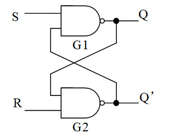
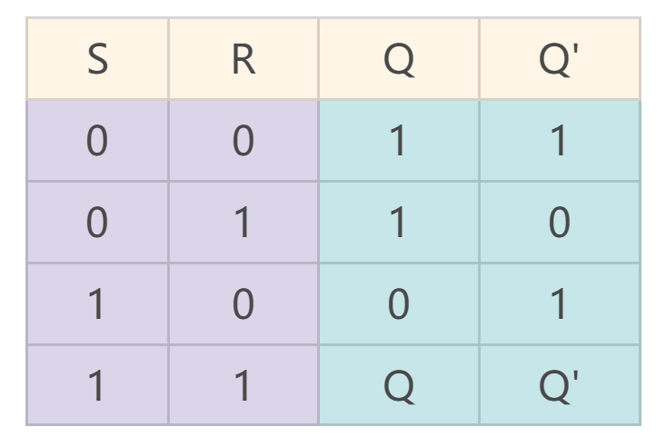
Latch SR
Al añadir 2 puertas NAND delante del flip-flop SR básico, se puede formar un latch SR con terminal de control.
El latch SR y su tabla de verdad se muestran a continuación.
- Cuando EN=0, G3 y G4 están cortados y el latch SR mantiene su estado de salida sin cambios.
- Cuando EN=1, su principio de funcionamiento es exactamente el mismo que el del flip-flop SR básico.
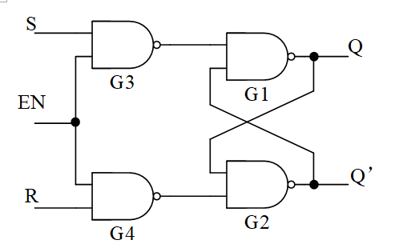
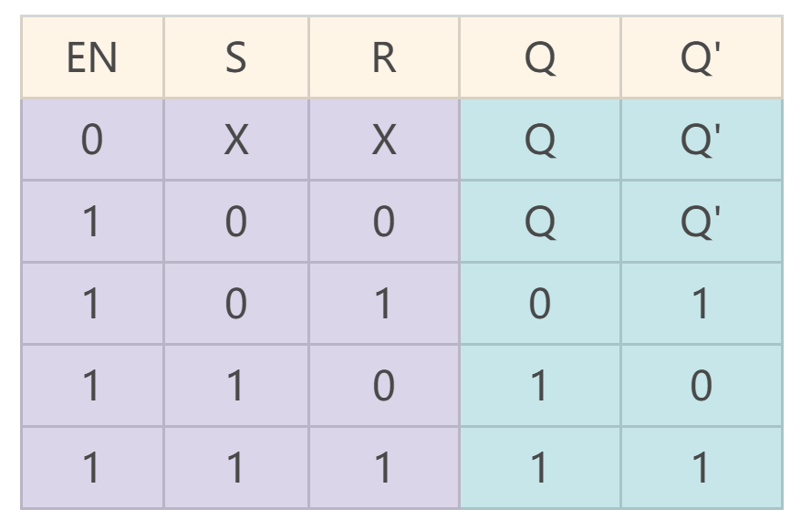
Latch D
Las entradas del flip-flop SR básico no pueden ser 0 al mismo tiempo, y las entradas del latch SR con terminal de control no pueden ser 1 al mismo tiempo; de lo contrario, se produciría una contradicción de no complementariedad entre las salidas Q y Q'.
Para eliminar este estado no permitido, se añade un módulo de inversión a la estructura del latch SR con terminal de control, garantizando que las 2 entradas tengan lógica opuesta; así se forma el latch D.
Su diagrama estructural y su tabla de verdad se muestran a continuación.
- 1. Cuando EN=1, el estado de salida cambia con el estado de entrada.
- 2. Cuando EN=0, el estado de salida se mantiene sin cambios.
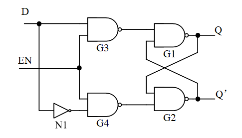
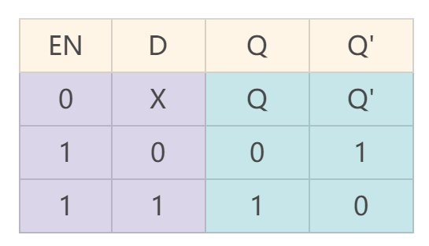
El latch D es un disparo por nivel.
Si durante el tiempo activo de EN=1, la señal en el terminal D cambia varias veces, la salida Q también cambiará varias veces. Esto reduce la capacidad de resistencia a interferencias del circuito y no es un circuito seguro como se requiere en la práctica.
Para mejorar la fiabilidad del flip-flop y aumentar la capacidad del circuito para resistir interferencias, se inventó el flip-flop D, que captura la señal en un momento específico.
Flip-flop D
Cascadando dos latches D e invirtiendo el reloj, se forma un flip-flop D simple, también conocido como Flip-flop.
Su diagrama estructural y su tabla de verdad se muestran a continuación.
El primer latch D también se denomina latch maestro; captura cuando CP está en nivel bajo. El segundo latch D también se denomina latch esclavo; su reloj es opuesto al del latch maestro y captura cuando CP está en nivel alto.
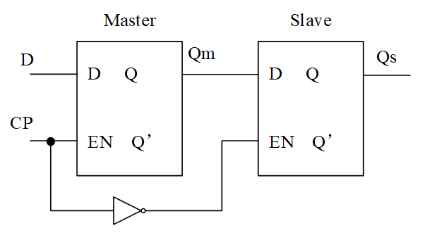
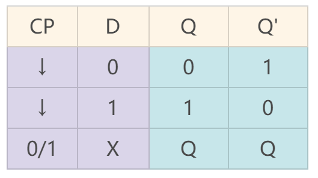
- 1. Cuando CP=1, la salida Qm del latch maestro se mantiene consistente con los cambios de la señal en el terminal D, mientras que el latch esclavo está en estado de mantenimiento y su salida Qs permanece sin cambios.
- 2. Cuando CP pasa de nivel alto a nivel bajo, el latch maestro captura el estado actual de D y lo transfiere a la salida Qm, manteniéndolo sin cambios. Mientras tanto, la salida Qs del latch esclavo se mantiene consistente con los cambios de Qm. En este momento, la salida Qm del latch maestro, que está en estado de captura, se mantiene sin cambios, por lo que después de que la salida Qs del flip-flop D recibe el nuevo valor de Qm, también permanece sin cambios.
En resumen, la salida Qs del flip-flop D solo captura la señal del terminal D en el flanco descendente del reloj CP; el resto del tiempo, la señal de salida tiene la función de mantenimiento.
Al expandir el latch D de dos etapas a una estructura de nivel de puerta, se obtiene lo que se muestra en la siguiente figura.
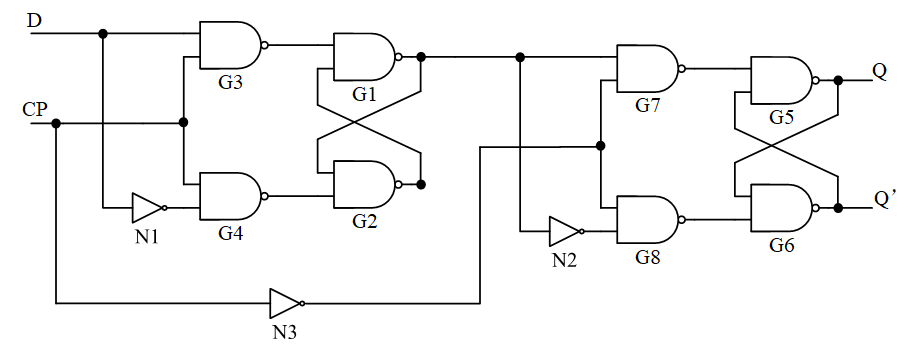
Se realiza un modelado a nivel de puerta del flip-flop D y se añade el retardo de puerta; el modelo Verilog es el siguiente:
Ejemplo
input D, CP,
output Q, QR);
parameter RISE_TIME = 0.11 ;
parameter FALL_TIME = 0.07 ;
//part1, not gate
wire CPN, DN ;
not #(RISE_TIME, FALL_TIME) (CPN, CP);
not #(RISE_TIME, FALL_TIME) (DN, D);
//part2, master trigger
wire G3O, G4O ;
nand #(RISE_TIME, FALL_TIME) (G3O, D, CP);
nand #(RISE_TIME, FALL_TIME) (G4O, DN, CP);
wire #(RISE_TIME, FALL_TIME) G1O, G2O ;
nand #(RISE_TIME, FALL_TIME) (G1O, G3O, G2O);
nand #(RISE_TIME, FALL_TIME) (G2O, G4O, G1O);
//part3, slave trigger
wire G7O, G8O ;
nand #(RISE_TIME, FALL_TIME) (G7O, G1O, CPN);
nand #(RISE_TIME, FALL_TIME) (G8O, G2O, CPN);
wire G5O, G6O ;
nand #(RISE_TIME, FALL_TIME) (G5O, G7O, G6O);
nand #(RISE_TIME, FALL_TIME) (G6O, G8O, G5O);
assign Q = G5O ;
assign QR = G6O ;
endmodule
El testbench se escribe de la siguiente manera:
Ejemplo
module test ;
reg D, CP = 0 ;
wire Q, QR ;
always #5 CP = ~CP ;
initial begin
D = 0 ;
#12 D = 1 ;
#10 D = 0 ;
#14 D = 1 ;
#3 D = 0 ;
#18 D = 0 ;
end
D_TRI u_d_trigger(
.D (D),
.CP (CP),
.Q (Q),
.QR (QR));
initial begin
forever begin
#100;
//$display("---gyc---%d", $time);
if ($time >= 1000) begin
$finish ;
end
end
end
endmodule // test
Los resultados de la simulación son los siguientes.
Como se puede ver en la figura, las señales Q/QR capturan la señal del terminal D en el flanco descendente del reloj CP, permanecen sin cambios en un solo ciclo, y la salida tiene retraso.
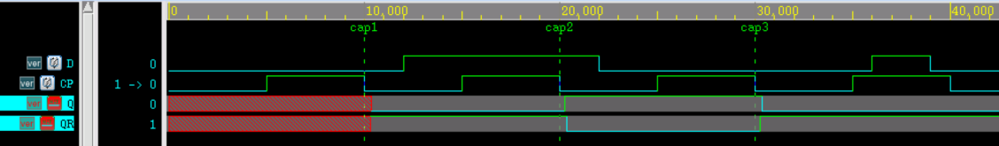
Amplíe el momento cap3 y realice un seguimiento del retraso, como se muestra en la siguiente figura.
- Del terminal CP al terminal CPN hay un retraso de subida, con un tiempo de 110ps;
- Del terminal CPN al terminal G8O hay un retraso de bajada, con un tiempo de 70ps;
- Del terminal G8O al terminal G6O hay un retraso de subida, con un tiempo de 110ps;
- Del terminal G6O al terminal Q hay un retraso de bajada, con un tiempo de 70ps;
- En total son 360ps, lo que coincide con el retraso de puerta configurado.
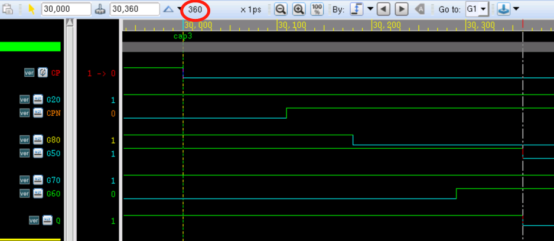
Haz clic para compartir notas
<p style="font-size:14px;">¡La nota debe ser una expansión del contenido de este artículo!</p><br> <p style="font-size:12px;"><a href="../tougao.html" target="_blank">Para enviar un artículo, haz clic aquí</a></p> <p style="font-size:14px;"><a href="./runoob-user-test-intro.html" target="_blank">Cómo obtener el código de invitación de registro</a></p> <h3 class="text-muted"><i class="fa fa-info-circle" aria-hidden="true"></i> ¡Antes de compartir notas, debes <a href=".." class="runoob-pop">iniciar sesión</a>!</h3> <p><a href="./runoob-user-test-intro.html" target="_blank">Cómo obtener el código de invitación de registro</a></p>